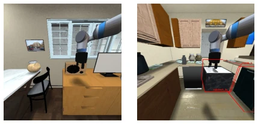
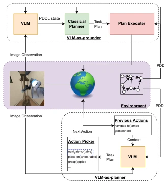
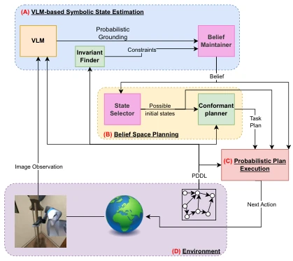

This 2026 NeuS paper attempts to "disenchant" VLM planning using probability theory. The authors keenly point out that existing VLM-as-planner and VLM-as-grounder approaches are too "confident," treating VLM hallucinations as truth, causing robots to crash into walls directly when they cannot see things. The core of RoVLaP lies in "admitting ignorance," transforming VLM outputs into probability distributions, and passing them to a conformant planner to seek robust solutions. Although the theory is solid, the high number of VLM calls means real-time performance might be a drawback, after all, each planning run requires running VLM and MLSS search once. However, in high-uncertainty scenarios like home robots, this "prefer slow but steady over blind confidence" strategy is indeed more reliable than blind confidence, building a probabilistic bridge between the symbolic and perceptual layers of embodied intelligence. Although the computational overhead is debatable, it successfully solves the planning failure problem in partially observable environments, counting as adding a layer of "anti-hallucination" insurance for VLM.
研究动机Motivation
具身智能在部分可观测环境下最大的痛点是感知不确定性。Merler et al. (2025) 指出的 VLM-as-planner 和 VLM-as-grounder 范式都忽略了 VLM 预测的置信度，将符号 grounding 视为确定性事实。这导致如 Azran et al. (2025) 所述，当视觉信息模糊（如物体被遮挡）时，确定性规划会直接失败。例如，机器人可能误判手中无物而规划抓取，或忽略隐藏物体导致任务卡死。现有框架依赖 Closed World Assumption，无法处理“未知即未知”的情况，亟需一种能显式建模感知不确定性并据此生成鲁棒计划的方法，否则在真实家庭环境中极易因单次感知错误而全盘崩溃。这种确定性假设在噪声大的视觉输入下显得尤为脆弱，限制了 VLM 在开放世界任务中的实际部署能力。
The major pain point of embodied AI in partially observable environments is perception uncertainty. The VLM-as-planner and VLM-as-grounder paradigms pointed out by Merler et al. (2025) both ignore the confidence of VLM predictions, treating symbolic grounding as deterministic facts. This leads to, as stated by Azran et al. (2025), deterministic planning failing directly when visual information is ambiguous (e.g., objects occluded). For example, robots may misjudge no object in hand and plan grasping, or ignore hidden objects causing task deadlock. Existing frameworks rely on Closed World Assumption, unable to handle "unknown is unknown" situations, urgently needing a method that can explicitly model perception uncertainty and generate robust plans based on it, otherwise in real home environments it is very easy to collapse completely due to a single perception error. This deterministic assumption appears particularly fragile under noisy visual inputs, limiting the actual deployment capability of VLM in open-world tasks.

Figure 1: Observations for two tasks in the ViPlan household benchmark (Merler et al., 2025).

Figure 2: VLM-as-grounder (top) and VLM-as-planner (bottom)
RoVLaP contains three core modules. First is VLM probabilistic grounding, not directly outputting boolean values, but extracting VLM probabilities for "true/false/null" tokens, updating belief values of each fluent via log-odds, allowing "unknown" states, solving the problem of insufficient calibration of VLM for unseen objects. Second is constructing belief space, using MLSS algorithm (Algorithm 1) to filter out the most probable subset with cumulative probability exceeding threshold θ from all possible states, and considering PDDL constraints, ensuring planning is based on high-confidence state sets. Finally is execution loop, introducing belief-consistency monitoring, triggering replanning when new observations seriously conflict with current beliefs or plan probability falls below threshold. This method converts RVP problem to Conformant Probabilistic Planning (CPP), utilizing existing planners to solve, ensuring task success rate under perception noise, and theoretically proving that as long as VLM is well-calibrated, repeated observations can converge to true states, providing verifiable theoretical boundaries for uncertainty planning.

Figure 3: Robust Vision-Language Plan- ning (RoVLaP) pipeline
In the ViPlan-HH benchmark test, compared VLM-P, VLM-G, and RoVLaP. Results show RoVLaP success rates on simple, medium, hard tasks are 86.7%, 57.1%, 66.7% respectively, far exceeding VLM-G's 40%, 21.4%, 0%. Especially in hard tasks, VLM-G completely fails, while RoVLaP can still solve. RoVLaP also reduced planner calls and action counts, indicating its initial plan is more accurate. Ablation studies show considering multi-state hypotheses (MLSS) avoids replanning better than single deterministic grounding, verifying the effectiveness of probabilistic grounding in partially observable environments, proving that introducing uncertainty modeling can significantly improve success rates of complex tasks, and computational overhead is within acceptable range, providing data support for subsequent real robot deployment.